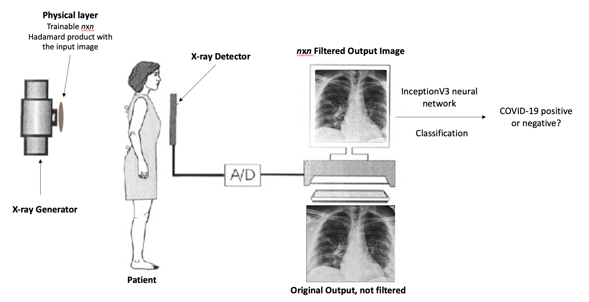

| Paper PDF |

|
This project was meant to use the InceptionV3 neural network to use a trainable physical layer to optimize classification of chest X-rays of COVID-19 patients between healthy lungs and those that have pneumonia induced by COVID-19. The weights of the physical layer will be restricted from 0 to 1, as representations of the portion of X-rays that are allowed through after the layer is implemented. In the fully trained model, the input for the model will be the element-wise multiplication between the trained mask and the original image, which will then be passed to a trained InceptionV3 neural network, which will then classify the image as either a healthy patient or as a patient who has COVID-19. After my training was complete, my network was able to classify images at an accuracy greater than 99%, with sensitivities and specificities greater than 99% as well. This is a substantial improvement over the standard sensitivity of rapid COVID tests used today, which generally have sensitivities around 60-70%. The data that I used to train my model can be found here and here. |
|
|
| Paper: |
| Code and Data: |